Background
After many years of a corporate career (17) diverging from computer science, I have now decided to learn Machine Learning and in the process return to coding (something I have always loved!).
To fully grasp the essence of ML I decided to start by coding a ML library myself, so I can fully understand the inner workings, linear algebra and calculus involved in Stochastic Gradient Descent. And on top learn Python (I used to code in C++ 20 years ago).
I built a general purpose basic ML library that creates a Neural Network (only DENSE layers), saves and loads the weights into a file, does forward propagation and training (optimization of weights and biases) using SGD. I tested the ML library with the XOR problem to make sure it worked fine. You can read the blog post for it here.
For the next challenge I am interested in reinforcement learning greatly inspired by Deep Mind’s astonishing feats of having their Alpha Go, Alpha Zero and Alpha Star programs learn (and be amazing at it) Go, Chess, Atari games and lately Starcraft; I set myself to the task of programming a neural network that will learn by itself how to play the ancient game of tic tac toe (or noughts and crosses).
How hard could it be?
Of course the first thing to do was to program the game itself, so I chose Python because I am learning it, so it gives me a good practice opportunity, and PyGame for the interface.
Coding the game was quite straightforward, albeit for the hiccups of being my first PyGame and almost my first Python program ever.
I created the game quite openly, in such a way that it can be played by two humans, by a human vs. an algorithmic AI, and a human vs. the neural network. And of course the neural network against a choice of 3 AI engines: random, minimax or hardcoded (an exercise I wanted to do since a long time).
While training, the visuals of the game can be disabled to make training much faster.
Now, for the fun part, training the network, I followed Deep Mind’s own DQN recommendations:
- The network will be an approximation for the Q value function or Bellman equation, meaning that the network will be trained to predict the "value" of each move available in a given game state.
- A replay experience memory was implemented. This meant that the neural network will not be trained after each move. Each move will be recorded in a special "memory" alongside with the state of the board and the reward it received for taking such an action (move).
- After the memory is sizable enough, batches of random experiences sampled from the replay memory are used for every training round
- A secondary neural network (identical to the main one) is used to calculate part of the Q value function (Bellman equation), in particular the future Q values. And then it is updated with the main network's weights every n games. This is done so that we are not chasing a moving target.
Designing the neural network
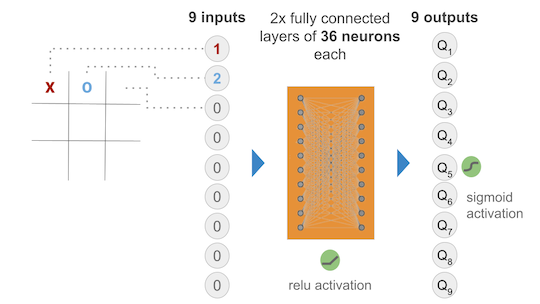
The Neural Network chosen takes 9 inputs (the current state of the game) and outputs 9 Q values for each of the 9 squares in the board of the game (possible actions). Obviously some squares are illegal moves, hence while training there was a negative reward given to illegal moves hoping that the model would learn not to play illegal moves in a given position.
I started out with two hidden layers of 36 neurons each, all fully connected and activated via ReLu. The output layer was initially activated using sigmoid to ensure that we get a nice value between 0 and 1 that represents the QValue of a given state action pair.
The many models…
Model 1 - the first try
At first the model was trained by playing vs. a “perfect” AI, meaning a hard coded algorithm that never looses and that will win if it is given the chance. After several thousand training rounds, I noticed that the Neural Network was not learning much; so I switched to training vs. a completely random player, so that it will also learn how to win. After training vs. the random player, the Neural Network seems to have made progress and is steadily diminishing the loss function over time.
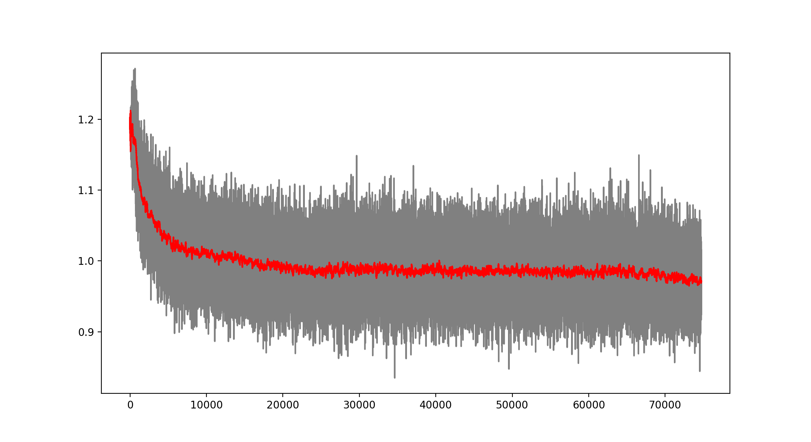
However, the model was still generating many illegal moves, so I decided to modify the reinforcement learning algorithm to punish more the illegal moves. The change consisted in populating with zeros all the corresponding illegal moves for a given position at the target values to train the network. This seemed to work very well for diminishing the illegal moves:
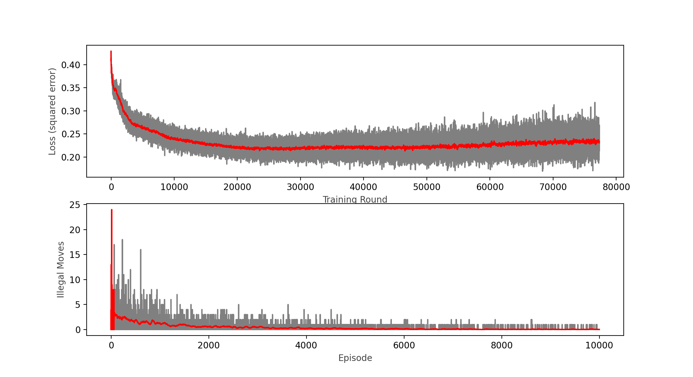
Nevertheless, the model was still performing quite poorly winning only around 50% of games vs. a completely random player (I expected it to win above 90% of the time). This was after only training 100,000 games, so I decided to keep training and see the results:
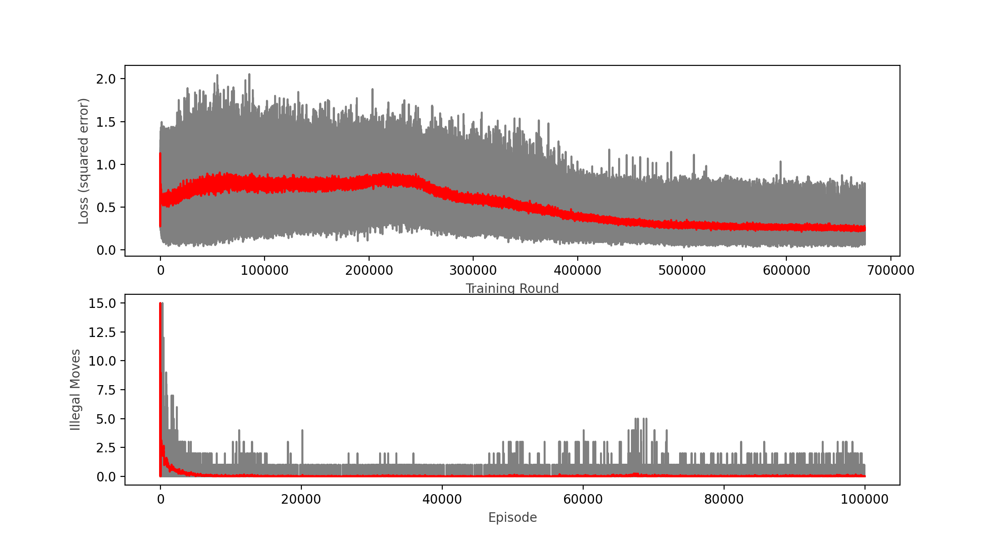
Wins: 65.46% Losses: 30.32% Ties: 4.23%
Note that when training restarts, the loss and illegal moves are still high in the beginning of the training round, and this is caused by the epsilon greedy strategy that prefers exploration (a completely random move) over exploitation, this preference diminishes over time.
After another round of 100,000 games, I can see that the loss function actually started to diminish, and the win rate ended up at 65%, so with little hope I decided to carry on and do another round of 100,000 games (about 2 hours in an i7 MacBook Pro):
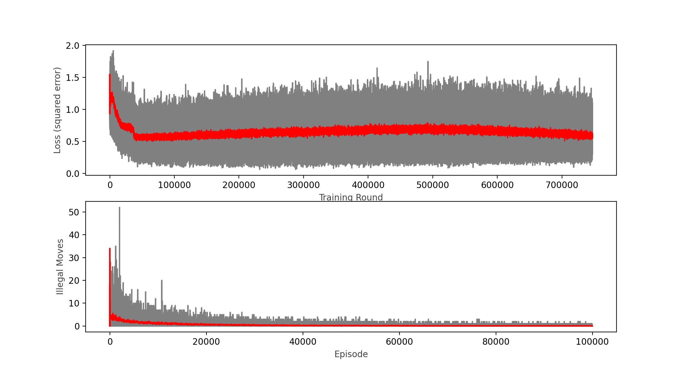
Wins: 46.40% Losses: 41.33% Ties: 12.27%
As you can see in the chart, the calculated loss not even plateaued, but it seemed to increase a bit over time, which tells me the model is not learning anymore. This was confirmed by the win rate decreasing with respect of the previous round to a meek 46.4% that looks no better than a random player.
Model 2 - Linear activation for the output
After not getting the results I wanted, I decided to change the output activation function to linear, since the output is supposed to be a Q value, and not a probability of an action.
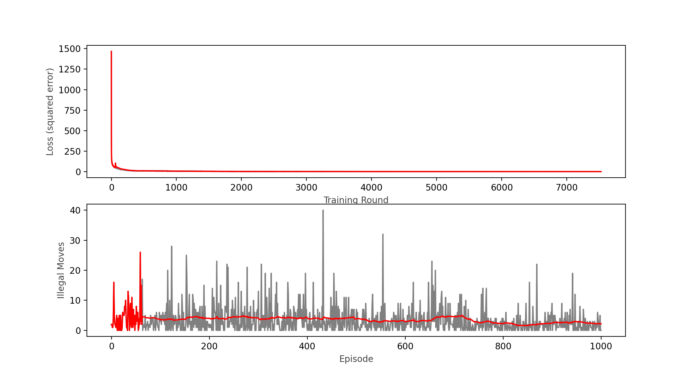
Wins: 47.60% Losses: 39% Ties: 13.4%
Initially I tested with only 1000 games to see if the new activation function was working, the loss function appears to be decreasing, however it reached a plateau around a value of 1, hence still not learning as expected. I came across a technique by Brad Kenstler, Carl Thome and Jeremy Jordan called Cyclical Learning Rate, which appears to solve some cases of stagnating loss functions in this type of networks. So I gave it a go using their Triangle 1 model.
With the cycling learning rate in place, still no luck after a quick 1,000 games training round; so I decided to implement on top a decaying learning rate as per the following formula:
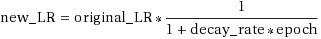
The resulting learning rate combining the cycles and decay per epoch is:
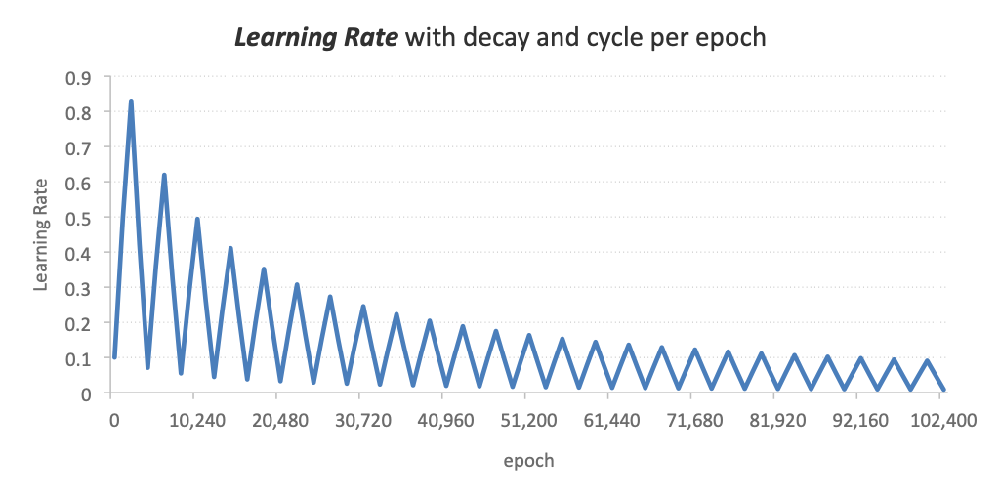
Learning Rate = 0.1, Decay = 0.0001, Cycle = 2048 epochs,
max Learning Rate factor = 10x
true_epoch = epoch - c.BATCH_SIZE
learning_rate = self.learning_rate*(1/(1+c.DECAY_RATE*true_epoch))
if c.CLR_ON: learning_rate = self.cyclic_learning_rate(learning_rate,true_epoch)
@staticmethod
def cyclic_learning_rate(learning_rate, epoch):
max_lr = learning_rate*c.MAX_LR_FACTOR
cycle = np.floor(1+(epoch/(2*c.LR_STEP_SIZE)))
x = np.abs((epoch/c.LR_STEP_SIZE)-(2*cycle)+1)
return learning_rate+(max_lr-learning_rate)*np.maximum(0,(1-x))
c.DECAY_RATE = learning rate decay rate
c.MAX_LR_FACTOR = multiplier that determines the max learning rate
c.LR_STEP_SIZE = the number of epochs each cycle lasts
With these many changes, I decided to restart with a fresh set of random weights and biases and try training more (much more) games.
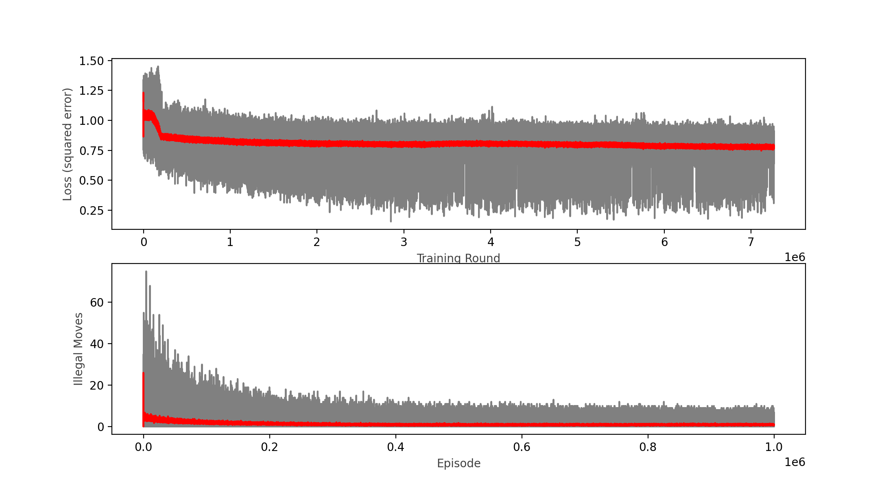
1,000,000 episodes, 7.5 million epochs with batches of 64 moves each
Wins: 52.66% Losses: 36.02% Ties: 11.32%
After 24 hours!, my computer was able to run 1,000,000 episodes (games played), which represented 7.5 million training epochs of batches of 64 plays (480 million plays learned), the learning rate did decreased (a bit), but is clearly still in a plateau; interestingly, the lower boundary of the loss function plot seems to continue to decrease as the upper bound and the moving average remains constant. This led me to believe that I might have hit a local minimum.
Model 3 - new network topology
After all the failures I figured I had to rethink the topology of the network and play around with combinations of different networks and learning rates.
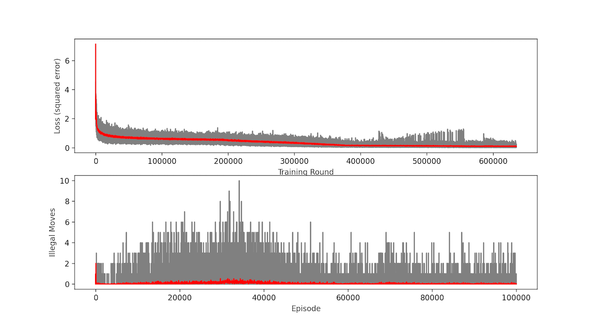
100,000 episodes, 635,000 epochs with batches of 64 moves each
Wins: 76.83% Losses: 17.35% Ties: 5.82%
I increased to 200 neurons each hidden layer. In spite of this great improvement the loss function was still in a plateau at around 0.1 (Mean Squared Error). Which, although it is greatly reduced from what we had, still was giving out only 77% win rate vs. a random player, the network was playing tic tac toe as a toddler!
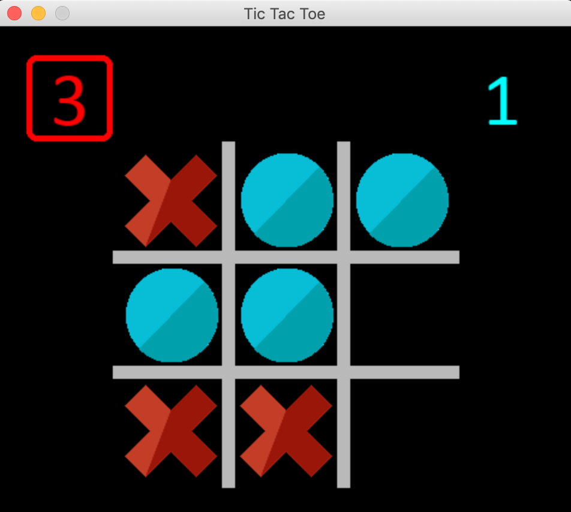
*I can still beat the network most of the time! (I am playing with the red X)*
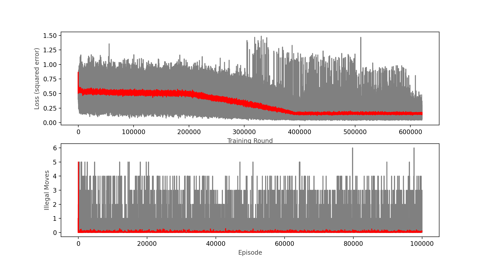
100,000 more episodes, 620,000 epochs with batches of 64 moves each
Wins: 82.25% Losses: 13.28% Ties: 4.46%
Finally we crossed the 80% mark! This is quite an achievement, it seems that the change in network topology is working, although it also looks like the loss function is stagnating at around 0.15.
After more training rounds and some experimenting with the learning rate and other parameters, I couldn’t improve past the 82.25% win rate.
These have been the results so far:
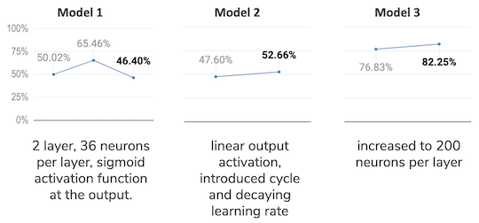
It is quite interesting to learn how the many parameters (hyper-parameters as most authors call them) of a neural network model affect its training performance, I have played with:
- the learning rate
- the network topology and activation functions
- the cycling and decaying learning rate parameters
- the batch size
- the target update cycle (when the target network is updated with the weights from the policy network)
- the rewards policy
- the epsilon greedy strategy
- whether to train vs. a random player or an “intelligent” AI.
And so far the most effective change has been the network topology, but being so close but not quite there yet to my goal of 90% win rate vs. a random player, I will still try to optimize further.
Network topology seems to have the biggest impact on a neural network's learning ability.
Model 4 - implementing momentum
I reached out to the reddit community and a kind soul pointed out that maybe what I need is to apply momentum to the optimization algorithm. So I did some research and ended up deciding to implement various optimization methods to experiment with:
- Stochastic Gradient Descent with Momentum
- RMSProp: Root Mean Square Plain Momentum
- NAG: Nezterov’s Accelerated Momentum
- Adam: Adaptive Moment Estimation
- and keep my old vanilla Gradient Descent (vGD) ☺
Click here for a detailed explanation and code of all the implemented optimization algorithms.
So far, I have not been able to get better results with Model 4, I have tried all the momentum optimization algorithms with little to no success.
Model 5 - implementing one-hot encoding and changing topology (again)
I came across an interesting project in Github that deals exactly with Deep Q Learning, and I noticed that he used “one-hot” encoding for the input as opposed to directly entering the values of the player into the 9 input slots. So I decided to give it a try and at the same time change my topology to match his:
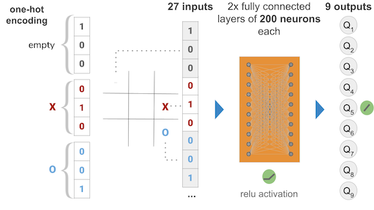
So, ‘one hot’ encoding is basically changing the input of a single square in the tic tac toe board to three numbers, so that each state is represented with different inputs, thus the network can clearly differentiate the three of them. As the original author puts it, the way I was encoding, having 0 for empty, 1 for X and 2 for O, the network couldn’t easily tell that, for instance, O and X both meant occupied states, because one is two times as far from 0 as the other. With the new encoding, the empty state will be 3 inputs: (1,0,0), the X will be (0,1,0) and the O (0,0,1) as in the diagram.
Still, no luck even with Model 5, so I am starting to think that there could be a bug in my code.
To test this hypothesis, I decided to implement the same model using Tensorflow / Keras.
Model 6 - Tensorflow / Keras

self.PolicyNetwork = Sequential()
for layer in hidden_layers:
self.PolicyNetwork.add(Dense(
units=layer,
activation='relu',
input_dim=inputs,
kernel_initializer='random_uniform',
bias_initializer='zeros'))
self.PolicyNetwork.add(Dense(
outputs,
kernel_initializer='random_uniform',
bias_initializer='zeros'))
opt = Adam(learning_rate=c.LEARNING_RATE,
beta_1=c.GAMMA_OPT,
beta_2=c.BETA,
epsilon=c.EPSILON,
amsgrad=False)
self.PolicyNetwork.compile(optimizer='adam',
loss='mean_squared_error',
metrics=['accuracy'])
As you can see I am reusing all of my old code, and just replacing my Neural Net library with Tensorflow/Keras, keeping even my hyper-parameter constants.
The training function changed to:
reduce_lr_on_plateau = ReduceLROnPlateau(monitor='loss',
factor=0.1,
patience=25)
history = self.PolicyNetwork.fit(np.asarray(states_to_train),
np.asarray(targets_to_train),
epochs=c.EPOCHS,
batch_size=c.BATCH_SIZE,
verbose=1,
callbacks=[reduce_lr_on_plateau],
shuffle=True)
With Tensorflow implemented, the first thing I noticed, was that I had an error in the calculation of the loss, although this only affected reporting and didn’t change a thing on the training of the network, so the results kept being the same, the loss function was still stagnating! My code was not the issue.
Model 7 - changing the training schedule
Next I tried to change the way the network was training as per u/elBarto015 advised me on reddit.
The way I was training initially was:
- Games begin being simulated and the outcome recorded in the replay memory
- Once a sufficient ammount of experiences are recorded (at least equal to the batch size) the Network will train with a random sample of experiences from the replay memory. The ammount of experiences to sample is the batch size.
- The games continue to be played between the random player and the network.
- Every move from either player generates a new training round, again with a random sample from the replay memory.
- This continues until the number of games set up conclude.
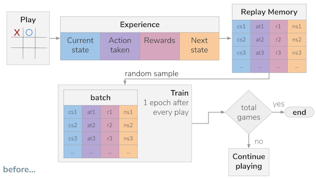
The first change was to train only after every game concludes with the same ammount of data (a batch). This was still not giving any good results.
The second change was more drastic, it introduced the concept of epochs for every training round, it basically sampled the replay memory for epochs * batch size experiences, for instance if epochs selected were 10, and batch size was 81, then 810 experiences were sampled out of the replay memory. With this sample the network was then trained for 10 epochs randomly using the batch size.
This meant that I was training now effectively 10 (or the number of epochs selected) times more per game, but in batches of the same size and randomly shuffling the experiences each epoch.
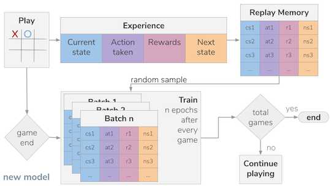
After still playing around with some hyperparameters I managed to get similar performance as I got before, reaching 83.15% win rate vs. the random player, so I decided to keep training in rounds of 2,000 games each to evaluate performance. With almost every round I could see improvement:
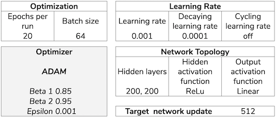
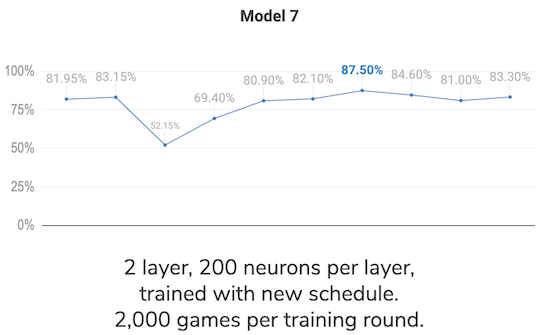
As of today, my best result so far is 87.5%, I will leave it rest for a while and keep investigating to find a reason for not being able to reach at least 90%. I read about self play, and it looks like a viable option to test and a fun coding challenge. However, before embarking in yet another big change I want to ensure I have been thorough with the model and have tested every option correctly.
I feel the end is near… should I continue to update this post as new events unfold or shall I make it a multi post thread?
Vera Breen
Fantasy Romance and Erotica Author